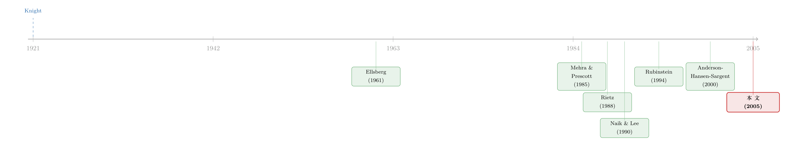

罕见，所以可怕：把「算不准的概率」写进期权的微笑里
本文读的是 Liu, Pan & Wang (2005, Review of Financial Studies)：把「罕见事件」建模成总产出里的跳跃，并让代表性投资者不仅厌恶风险、还厌恶对罕见事件那套概率本身的不确定。在均衡里，股权溢价被拆成三块——扩散风险、跳跃风险，以及一块只由「不确定性厌恶」驱动的罕见事件溢价。单看股票分不出这三块，但把不同行权价的期权拉进来，这块溢价就现形了：它正好能解释指数期权那条标准模型怎么也压不平、也吹不出来的「微笑/狞笑」(smirk)。
1 引言：一只从没真正跳过的「黑天鹅」
先讲一个老掉牙、却始终绕不开的故事。
1954 年起，墨西哥比索对美元一直钉死在固定汇率上。可奇怪的是，墨西哥银行存款的利率，常年高于同期限的美国存款。按教科书，固定汇率下两国利差就是个无风险套利——你借美元、换比索、吃利差、再换回美元，稳赚。可这笔「免费的钱」十几年没人能真正捡走。直到 1976 年 8 月，比索被允许浮动，一夜之间贬值 46%。那笔利差，原来一直是市场替「比索会崩」这件还没发生、却随时可能发生的事在掏的保费。这就是著名的「比索问题」(peso problem)。
比索问题的精髓不在「崩了」，而在「崩之前」：一个概率极低、却后果极重的事件，哪怕从未在样本里出现过，也能持续地、实打实地压在价格上。
金融市场里到处是这种东西。日内的小涨小跌，我们见得太多，对它的统计规律也算得相当有把握；可像 1987 年那种单日跌掉两成的崩盘，几十年才碰上一两回——样本太少，少到你根本没法把那套概率模型估准。
于是本文抛出一个看似天真、其实很要命的问题：
投资者对待「罕见事件」，会不会和对待「常见事件」根本就不是一回事？
这正是全文反复要讲透的那一个核心。传统做法（比如给模型加一个跳跃项）默认：罕见事件改变了你持有的风险组合，却不改变你的决策方式——你照旧拿着那套估出来的概率，去做风险与收益的权衡。可问题在于，有些事我们一辈子只遇上一两回，根本没机会从经验里学乖；既然连模型本身都信不过，凭什么要求投资者对这套模型「全心全意」？
如果投资者对罕见事件的那套概率心里发虚——也就是 Knight (1921) 和 Ellsberg (1961) 意义上的不确定性厌恶 (uncertainty aversion / ambiguity aversion)——那么这份「算不准」迟早会折进价格，变成一笔溢价。本文要做的，就是把这笔溢价显式地、在闭式解里算出来，再用期权把它从普通的风险溢价里剥出来。
（关于「算不准概率本身」如何改变投资者行为，可参见《算不准「风险有多大」的那些天，散户在做什么？》与《算不准均值的那群人，悄悄退出了股市——一个把「有限参与」内生出来的模型》。）
2 风险，还是不确定性？
这里得先把两个常被混为一谈的词分开。
风险 (risk)：你知道概率分布，只是结果随机。掷一枚公平硬币，正反各 50%——你不知道下次是哪面，但你笃信那个「50%」。 不确定性 (uncertainty / ambiguity)：你连概率分布本身都不敢确定。一只来路不明的袋子，里头红球黑球比例未知——你愿意为「赌红」下多少注？Ellsberg 的实验说明，大多数人会回避这种说不清的赌局，哪怕期望收益更高。
本文的关键判断是：这两种态度，应该用在不同的风险上。对日常的扩散性波动，投资者大体上信得过经济学家建的模型，按风险来处理就行；可对罕见事件，谁也没底，自然就要按不确定性来处理。
这一「区别对待」，恰恰是本文方法论上与 Anderson, Hansen & Sargent (2000)（下称 AHS）最重要的分野。AHS 的稳健控制 (robust control) 框架里，投资者对整个模型都心存疑虑；而本文的投资者只对跳跃那一块疑神疑鬼，对扩散那一块相当淡定。听上去只是个小限制，可一旦把模型拿去定价期权，这个区别就生死攸关——因为期权对扩散冲击和跳跃冲击的敏感度，天差地别。
（让投资者「随行情切换对模型的信任尺度」这一思路，另见《悲观与乐观的浪潮：当「稳健」的投资者学会了随行情换尺子》。）
3 模型：把「罕见」写成一次跳跃
接着，一个自然的问题是：怎么把上面这套直觉，落成一个能解的均衡模型？
3.1 经济与禀赋
设定是最经典的 Lucas (1978) 纯交换经济：一个代表性投资者，一种易腐消费品。股票是对总禀赋 \(Y_t\) 的索取权。禀赋服从一个跳跃-扩散 (jump-diffusion) 过程：
$$dY_t = \mu\,Y_t\,dt + \sigma\,Y_t\,dB_t + \left(e^{Z_t}-1\right)Y_{t-}\,dN_t$$
逐项拆开看：
- \(\mu\,Y_t\,dt\) 是常数增长率的漂移；
- \(\sigma\,Y_t\,dB_t\) 是标准的扩散项，\(B_t\) 是布朗运动——这是「日常波动」；
- \(\left(e^{Z_t}-1\right)Y_{t-}\,dN_t\) 是纯跳跃项：\(N_t\) 是强度为 \(\lambda\) 的泊松过程，负责「什么时候跳」；一旦跳，幅度由 \(Z_t\) 决定，\(Z_t\sim\mathcal{N}(m_J,\,s_J^2)\)，负责「跳多大」。
跳跃的平均百分比幅度是
$$k = e^{\,m_J + s_J^2/2} - 1.$$
本文只关心「坏」的罕见事件，所以限定 \(k\le 0\)（向下跳）。这套设定直接承袭 Naik & Lee (1990)，是同时容纳「常见」与「罕见」两类冲击的最省俭写法。这里的要害是：\(\lambda\)、\(m_J\)、\(s_J\) 这几个跳跃参数，由于样本里跳得太少，统计上估得极不精确——这正是「不确定性」要落脚的地方。
3.2 用一族「替代模型」来表达疑虑
然后，真正关键的一步来了：怎么让投资者表达「我对跳跃那套概率信不过」？
本文的做法是稳健控制的经典套路——给投资者一族替代模型，让他在最坏情形下做决策。把基准模型（上面那条 SDE）的概率测度记作 \(P\)；任一替代测度 \(P(\xi)\) 由它相对 \(P\) 的 Radon–Nikodym 导数 \(\xi_t = dP(\xi)/dP\) 刻画：
$$d\xi_t = \left(e^{\,a + b Z_t - b m_J - \frac{1}{2}b^2 s_J^2} - 1\right)\xi_{t-}\,dN_t - \left(e^{a}-1\right)\lambda\,\xi_t\,dt$$
其中 \(a\)、\(b\) 是两个可预测过程。妙处在于：这个 \(\xi\) 只动跳跃、不碰扩散。在替代测度 \(P(\xi)\) 下，跳跃强度和跳跃幅度相对基准发生如下平移：
$$\lambda^\xi = \lambda\,e^{a}, \qquad 1 + k^\xi = (1+k)\,e^{\,b\,s_J^2}.$$
这两条式子，是整篇文章的「机械心脏」，值得多看两眼：
- \(a\) 是时点疑虑：\(a>0\) 把跳跃来得更频繁（\(\lambda^\xi>\lambda\)）；
- \(b\) 是幅度疑虑：\(b<0\) 把向下跳跳得更狠（\(k^\xi\) 更负）。
更进一步，作者还能把疑虑「定向」：令 \(b=0\) 得到子集 \(\mathcal{P}^a\)——只怀疑「跳得多频繁」，对幅度心里有数；令 \(a=0\) 得到 \(\mathcal{P}^b\)——只怀疑「跳得多狠」，对频率有数；令 \(a=b=0\)，集合退化成单点（只剩基准模型），那就回到了标准的、只厌恶风险的投资者。一个旋钮，把「对罕见事件的哪一面发虚」拆得清清楚楚。
3.3 偏好：在「最坏情形」与「离基准多远」之间权衡
投资者怎么用这族模型？本文在离散时间里把时点 \(t\) 的效用递归地定义为下式（连续时间极限留到本节末）。这是全文的核心方程，把它逐块拆开：
直觉是这样：一方面，为了防身，投资者把未来效用 \(E_t^\xi(U_{t+\Delta})\) 放在比基准更糟的跳跃模型下评估——所以是 \(\inf\)（取下确界，挑最坏的那个 \(P(\xi)\)）；另一方面，他也知道基准 \(P\) 才是数据的最佳统计刻画，于是按替代模型「离基准多远」来罚自己，距离由
$$h(x) = x + b\,(e^{x}-1)$$
度量（此处的 \(b>0\) 是距离函数的曲率参数，与 §3.2 里那个跳跃幅度的 \(b\) 不是一回事，论文复用了同一字母）。\(\phi\) 越大，投资者越不在乎「离基准多远」、越在意「最坏情形有多糟」——也就是不确定性厌恶越强。\(\phi=0\)（等价地 \(\mathcal{P}\) 退化成单点）时，这一切坍缩回标准的幂效用投资者。
这里有一处技术上的巧思，值得点一句。本文把 AHS 的「相对熵」(relative entropy) 距离推广成上面这个 \(h(x)=x+b(e^x-1)\) 的「扩展熵」形式。原因很实在：在纯「相对熵」下，针对跳跃幅度的稳健控制问题压根没有内点全局最小值——直白说，一个 \(\gamma>1\) 的投资者会被「跳跃可能更狠」这件事吓到「宁可全盘皆输」的极端去。多出来的曲率项 \(b(e^x-1)\)，正是把这个发散的问题重新「拽」回良定义。对纯扩散模型，这个扩展距离又退回普通的相对熵——可见它是为「跳跃」量身定做的。
连续时间极限下，投资者的目标变为在 \(\{a,b\}\) 上取下确界的一个积分泛函，其中惩罚部分浓缩成一项 \(c(U_s)\,H(a_s,b_s)\)；\(H\) 由距离度量显式算出（见原文命题 1 的证明）。求解 HJB 方程即可得到闭式的均衡。
4 均衡：被拆成三块的股权溢价
求出均衡后，本文最漂亮的结果是：总股权溢价干净地分成三块。
- 扩散风险溢价：来自布朗冲击，量级是标准的 \(\gamma\sigma^2\)，由风险厌恶驱动；
- 跳跃风险溢价：来自泊松跳跃本身的风险，同样由风险厌恶驱动；
- 罕见事件溢价 (rare-event premium)：来自投资者在最坏情形下挑出的那个 \(a,b\neq 0\)——完全由不确定性厌恶驱动，与风险厌恶无关。
机制上，不确定性厌恶让投资者在定价时仿佛面对一个跳得更频（\(a>0\)）、跌得更狠（\(b<0\)）的世界，于是他要求一笔额外补偿。这笔补偿在 \(\phi=0\) 时消失。
但这里立刻撞上一堵墙：光看股票，你分不出这三块。原因很简单——你总能调一调风险厌恶 \(\gamma\) 去凑出任何一个观测到的总股权溢价，于是「到底是风险厌恶高，还是不确定性厌恶在作祟」就成了一笔糊涂账。要破局，必须请进一类对「罕见」和「日常」反应截然不同的资产。
5 反转：期权的「微笑」出卖了它
于是反转出现：把期权拉进来。
期权的妙处在于，不同行权价 (moneyness) 的期权，对罕见事件的敏感度天差地别。一份深度价外看跌期权 (deep-OTM put)，几乎就是一张「崩盘保险」——它对市场暴跌极度敏感，对日常波动则相对迟钝。所以，沿着行权价排开的一排期权，等于给我们提供了一把连续变化的「罕见事件敏感度」标尺。
指数期权市场有两个被反复证实的事实：
- 期权——包括平价期权 (ATM)——通常带溢价 [Jackwerth & Rubinstein (1996)]；
- 这个溢价对价外看跌 (OTM put) 比对 ATM 更夸张，于是把隐含波动率 (implied volatility) 对行权价画出来，得到一条向左上翘的曲线——著名的「微笑/狞笑」(smile / smirk) [Rubinstein (1994)]。
本文先拿没有不确定性厌恶的标准模型当基准：用股票收益数据校准它，再看它对期权说什么。结果是双重的失败——
- 它产生不出文献记录的那种 ATM 期权溢价的水平；
- 它生成的隐含波动率曲线几乎是平的，跟数据里那条陡峭的 smirk 形成刺眼对比。
换句话说，若只靠风险厌恶当唯一的溢价来源，你没法同时对上三样东西：股票里的溢价、ATM 期权里的溢价、OTM 看跌里的溢价。从股票走到 ATM 期权、再走到深度价外看跌，这些证券对罕见事件的敏感度单调递增；少了对这一特定成分的不确定性厌恶，单凭一个 \(\gamma\)，你拟合了其中一个，就必然错过另外两个。
而带上对罕见事件的不确定性厌恶之后，模型就活了：它既能造出 ATM 期权那个量级的溢价，又能吹出一条陡峭的 smirk，把不同行权价上的期权溢价一道对上。关键在于，模型有两个独立的旋钮——风险厌恶 \(\gamma\) 管扩散与跳跃的风险，不确定性厌恶 \(\phi\) 单独管罕见事件的市场价格；而本文的检验不是只盯两只证券，而是要求模型对所有行权价的期权都说得通。这是一个比「两参数凑两点」严苛得多的检验。
这也回答了一个常见的辩驳：「Bates (2001) 加一个『崩盘厌恶』也能给跳跃风险单配一个系数，效果不一样吗？」本文承认，从拟合上看，崩盘厌恶确实能把跳跃风险的市场价格从扩散风险里分出来；但它没说清这个崩盘厌恶从哪来。本文的贡献正是给它一个有公理基础的经济来源：对罕见事件的奈特不确定性。
（关于「从期权里反推出来的风险态度为什么会咧嘴一笑」，本博客另有一篇专门讨论：《为什么从期权里「读」出来的风险厌恶，会咧嘴一笑？》；把投资者情绪写进期权微笑的另一条路径见《情绪会给「微笑」加多少弧度？》。）
6 一个重要的「反例」：递归效用做不到
为了证明驱动结果的真是不确定性厌恶、而不是别的什么，本文还做了两个干净的「排除法」。
其一，把投资者换成连续时间的 Epstein & Zin (1989) 递归效用 (recursive utility)，其余设定完全不变。作者显式推出定价核，证明它给扩散和跳跃冲击定价的方式与标准幂效用一模一样——那块罕见事件溢价生不出来。直觉很清楚：递归效用虽有两个自由参数，但它只有一个风险厌恶系数同时给扩散和跳跃风险定价，另一个（跨期替代弹性）只影响无风险利率，没有多出来的旋钮去单独调节罕见事件的市场价格。这同时也加固了期权校准的可信度——因为本文的两参数效用（风险厌恶 + 不确定性厌恶）与递归效用的两参数（风险厌恶 + 跨期替代）是「平起平坐」地在比，而递归效用解决不了 smirk。
其二，针对 Maenhout (2001) 那个归一化因子 \(c(\cdot)\) 可能引入的争议，作者用一个更一般的归一化形式做例子，证明：归一化的具体形式会改变解的具体数值，但「主结果建立在对罕见事件的不确定性厌恶之上」这件事，不受归一化选择的任何定性影响。
7 文献脉络
把这条线捋一捋，会看到两股河流在 2005 年这里汇合。
一股是罕见事件与股权溢价这条河。源头是 Mehra & Prescott (1985) 那个著名的「股权溢价之谜」——标准模型解释不了股票为何赚这么多。Rietz (1988) 给出一个大胆的解法：往两状态马尔可夫链里塞一个低概率的「崩盘态」，靠罕见灾难把溢价撑起来。Naik & Lee (1990) 则把跳跃直接写进纯交换经济的总禀赋，研究均衡——这正是本文禀赋过程的直接祖先。这一脉的共同点是：承认罕见事件重要，但保持投资者偏好不变。
另一股是奈特不确定性与稳健控制这条河。哲学源头是 Knight (1921) 对「风险」与「不确定性」的划分，以及 Ellsberg (1961) 那个让无数人折服的悖论。把它公理化、再请进资产定价的，是 Gilboa & Schmeidler (1989)、Epstein & Wang (1994)；而把它工程化成可解模型的，是 Anderson, Hansen & Sargent (2000) 的稳健控制框架，以及 Maenhout (2001) 引入归一化因子换来的解析可处理性。

本文站在两条河的交汇处：它借 Naik & Lee 的禀赋、借 AHS-Maenhout 的稳健控制工具，却做了一个新的限制——只对跳跃成分启用不确定性厌恶。正是这个限制，让模型在期权（而非股票）上有了可证伪的、且经得起递归效用反例考验的实证含义。它与同期 Pan (2002) 从期权时间序列里实证地剥出「跳跃风险溢价」的工作遥相呼应：一个从理论给出经济来源，一个从数据给出量级。
8 评论与延伸（Q&A + 研究方向）
(a) 几个可能的疑问
Q：「不确定性厌恶」和「极度厌恶跳跃风险」，在数学上不就是同一回事吗？
在拟合层面常常难分，但经济来源不同，且本文设计了能区分的检验。极度厌恶跳跃风险（如 Bates 的崩盘厌恶）是在偏好里直接塞一个更大的系数，缺乏微观基础；本文的不确定性厌恶来自「对跳跃概率本身估不准」，有 Wang (2003) 的公理基础，并且其惩罚项 \(h(\cdot)\)、最坏情形测度 \(P(\xi)\) 都有明确含义。更关键的是反例：递归效用同样有两个参数，却生不出这块溢价——说明起作用的不是「多一个参数」，而是「对模型本身的疑虑」这一特定结构。
Q：投资者凭什么只怀疑跳跃、却对扩散深信不疑？这是不是为了好看而设的假设？
这是本文最该被质疑、也辩护得最有力的一处。理由是样本量：日常波动每天都在发生，统计上估得很准，信得过；罕见事件几十年才一次，样本稀疏到没法估准，自然该发虚。本文也把这个直觉做成了可调的旋钮（\(\mathcal{P}^a\) 只疑频率、\(\mathcal{P}^b\) 只疑幅度），而不是一刀切。当然，「扩散完全没有模型不确定性」是个理想化——现实里波动率本身也估不准。
Q：为什么非得用期权？股票数据为什么不够？
因为股票只是单一的「敏感度」，你总能调风险厌恶 \(\gamma\) 去凑出任何观测到的总溢价，于是风险厌恶和不确定性厌恶的贡献在股票里不可识别。期权按行权价排开，提供了一条从低到高连续变化的「罕见事件敏感度」谱；要求模型同时对上整条谱，才把两种厌恶分了开。这是「用横截面识别一个时间序列里看不出的参数」的经典思路。
Q：模型不能解释「过度波动」，这是不是硬伤？
作者自己坦白了：模型里总产出波动率和股票波动率相等，无法处理「股市波动远高于消费波动」这一过度波动 (excess volatility) 问题。校准时因此面临「用哪个波动率」的选择，本文选了用股权市场的信息来校准，因为目标是探究股市与期权市场之间的联系，而非解释过度波动。这是一个诚实的范围声明，而非缺陷——它把自己的射程限定在「股票–期权」这条联系上。
Q：这套机制只对「向下跳」有效吗？如果允许向上跳会怎样？
本文明确限定 \(k\le 0\)，即只考虑「坏」的罕见事件，这与稳健控制「想最坏情形」的精神一致——投资者担心的是崩盘而非暴涨。这也正好对上 smirk 的方向：市场给下行保险（OTM put）的定价系统性偏贵。若放开向上跳，最坏情形的选择会更复杂，但对解释「向左上翘的 smirk」未必有帮助。
Q：把它从指数期权搬到别的市场（比如个股、信用、外汇），还成立吗？
机制是通用的：只要某类资产对「罕见、难估」的事件有差异化的敏感度，不确定性厌恶就该在它们的横截面价格里留下指纹。但本文只校准了指数期权。换到个股，特质性跳跃的「不可估性」更强、但也更可分散；换到信用或外汇，则要重新界定「罕见事件」是什么（违约？货币崩盘？）。这恰恰指向下面的研究方向。
(b) 几个可能的研究问题与提案
1. 公司债信用利差里的「罕见事件溢价」 - 【经济故事】公司债的下行尾部（违约、评级断崖式下调）正是典型的「罕见且难估」事件，且债券对它高度敏感、对日常利率波动相对迟钝——结构和指数期权的 OTM put 高度类似。信用利差长期高于「纯违约损失」所能解释的水平（信用利差之谜），本文的不确定性厌恶提供了一个不靠提高风险厌恶的解释。 - 【可行性】中。数据可用（TRACE 成交、Moody's/S&P 违约历史、CDS 报价）；识别上可把同一发行人不同优先级/不同久期的债券当作「不同罕见事件敏感度」的横截面，类比本文的 moneyness 谱。难点是违约的「罕见」程度因评级而异，校准需要分评级做。
2. 外资持有人与「比索问题」的现代版 - 【经济故事】本文的引子就是比索问题——外汇与主权市场天然带着「钉住汇率随时可能崩」的不确定性。一个自然的问题是：在新兴市场，外资持有人是否比本地投资者对这类罕见事件更不确定（信息劣势 + 难估概率），从而要求更高的罕见事件溢价？这会在外资持仓与本地债/汇溢价之间留下可检验的关联。 - 【可行性】中。需要分国别的外资持仓数据（如 EPFR、IMF CPIS）加主权 CDS / 本币债收益率。识别可用资本账户开放、纳入指数等准自然实验造外生变异。诚实地说，把「不确定性厌恶」与「信息劣势」分开是这条线的核心难点。
3. 罕见事件不确定性与公司债流动性的「同呼吸」 - 【经济故事】危机里公司债流动性骤降，往往伴随尾部恐慌升温。若做市商/投资者对罕见事件的不确定性是流动性溢价的一个驱动，那么尾部不确定性指标（如期权隐含的灾难概率）应当领先公司债买卖价差的走阔。 - 【可行性】中高。流动性度量与尾部指标都有现成数据（TRACE + 指数期权隐含分布）。识别偏相关而非因果，可作为一篇扎实的实证关联研究，与本博客《差点死掉的那个市场：一场公司债流动性危机的微观解剖》所记录的危机事件对照。
4. 把「不确定性厌恶」与「缓慢展开的灾难」放进同一个模型 - 【经济故事】本文把罕见事件设成「瞬时跳跃」。但现实中的灾难（疫情、危机）往往是缓慢展开的，投资者一边经历、一边学习概率。把贝叶斯学习与不确定性厌恶嵌进同一框架，能区分「我在更新概率」和「我对概率本身发虚」两种动态。 - 【可行性】低到中。理论上可做（已有学习 + 模糊的文献），但解析解很难，多半要靠数值；实证识别两种机制的分离更难。属于「有意思但难啃」的方向。可与《投资者还没回过神，灾难已经走完了一半》对话。
9 我的判断
贡献。 这篇文章最漂亮的地方，不在于「又造了一个能拟合 smirk 的模型」——能拟合 smirk 的模型一抓一大把——而在于它把「拟合」升级成了「识别」。它先用一个反例（递归效用做不到）和一个稳健性论证（归一化不影响定性结论）把结果牢牢钉在「对罕见事件的不确定性厌恶」这一个经济来源上，再用期权的整条 moneyness 谱做出一个远比「两参数凑两点」严苛的检验。「只对跳跃启用不确定性厌恶」这个看似随意的限制，其实是全篇的支点：它既有样本量上的现实理由，又恰好制造了股票看不出、期权才看得出的可证伪含义。技术上，把相对熵推广成扩展熵以驯服跳跃情形下的发散，也是一处真功夫。
对识别的担忧。 三点。其一，「扩散零不确定性、跳跃满不确定性」是个非黑即白的理想化，现实里波动率本身也估不准，这个二分被多大程度地推动了结果，值得做敏感性分析。其二，文章承认解决不了过度波动，于是校准时「用哪个波动率」是个不得不做的选择，这个选择对 smirk 的拟合有多关键，外人不易判断。其三，不确定性厌恶 \(\phi\) 与一个足够大的跳跃风险厌恶在数据上高度共线——本文靠递归效用反例做了区分，但那是「排除一个特定替代」，不等于排除了所有「行为等价」的偏好设定。
后续想看到什么。 我最想看到的是把这套框架直接拿到数据里去估、而不止于校准：用指数期权的横截面 + 时间序列联合估计 \(\gamma\) 与 \(\phi\)，看 \(\phi\) 是否随宏观尾部恐慌（如疫情、危机）显著时变。其次，我很想看它被搬到信用市场——公司债的下行尾部与 OTM put 在结构上太像了，那块「罕见事件溢价」很可能就是信用利差之谜里一直缺的一角。
参考文献
- Anderson, E., L. Hansen, and T. Sargent (2000). Robustness, Detection and the Price of Risk. Working paper, University of North Carolina, University of Chicago, and Stanford University.
- Bates, D. (2001). The Market Price of Crash Risk. Working paper, University of Iowa.
- Black, F., and M. Scholes (1973). The Pricing of Options and Corporate Liabilities. Journal of Political Economy 81, 637–654.
- Ellsberg, D. (1961). Risk, Ambiguity, and the Savage Axioms. Quarterly Journal of Economics 75, 643–669.
- Epstein, L., and T. Wang (1994). Intertemporal Asset Pricing under Knightian Uncertainty. Econometrica 62, 283–322.
- Epstein, L., and S. Zin (1989). Substitution, Risk Aversion, and the Temporal Behavior of Consumption and Asset Returns: A Theoretical Framework. Econometrica 57, 937–969.
- Gilboa, I., and D. Schmeidler (1989). Maxmin Expected Utility Theory with Non-unique Prior. Journal of Mathematical Economics 18, 141–153.
- Jackwerth, J. C., and M. Rubinstein (1996). Recovering Probability Distributions from Option Prices. Journal of Finance 51, 1611–1631.
- Knight, F. (1921). Risk, Uncertainty and Profit. Houghton, Mifflin, Boston.
- Lucas, R. E. (1978). Asset Prices in an Exchange Economy. Econometrica 46, 1429–1445.
- Maenhout, P. (2001). Robust Portfolio Rules, Hedging and Asset Pricing. Working paper, INSEAD.
- Mehra, R., and E. Prescott (1985). The Equity Premium: A Puzzle. Journal of Monetary Economics 15, 145–161.
- Naik, V., and M. Lee (1990). General Equilibrium Pricing of Options on the Market Portfolio with Discontinuous Returns. Review of Financial Studies 3, 493–521.
- Pan, J. (2002). The Jump-Risk Premia Implicit in Option Prices: Evidence from an Integrated Time-Series Study. Journal of Financial Economics 63, 3–50.
- Rietz, T. (1988). The Equity Risk Premium: A Solution. Journal of Monetary Economics 22, 117–131.
- Rubinstein, M. (1994). Implied Binomial Trees. Journal of Finance 49, 771–818.
- Wang, T. (2003). A Class of Multi-Prior Preferences. Working paper, University of British Columbia.